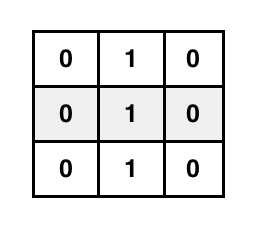
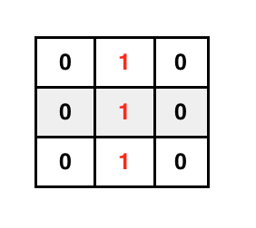
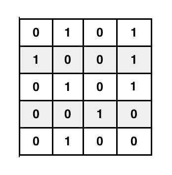
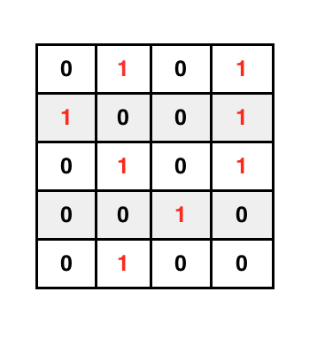
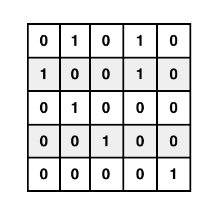

Quiz 1 Practice Problems
If you are a current student, please Log In for full access to the web site.
Note that this link will take you to an external site (https://oidc.mit.edu) to authenticate, and then you will be redirected back to this page.
Practice Problems for 6.009 Quiz 1 (Fall 2018)
Since these are practice problems, there is nothing to turn in! We have included unit tests for each problem: the unit test for Problem 01 is called TestProblem01, and so on.
The following file contains quiz.py and test.py: q1_problems.zip
Problem 01: find_triple( ilist )
Find a triple of integers x, y, z in the list ilist such that x + y
= z. Return the tuple (x, y). If the triple does not exist, return
None. Note that x, y and z should be different elements of the
list. For instance, for ilist=[1,5,2] the answer is None because we
cannot use ilist[0] + ilist[0] = ilist[2]. In contrast, for
ilist=[1,1,2], the answer is (1,1) because we can use ilist[0] +
ilist[1] = ilist[2]. Also, note that the list may have more than one
triple, but you should only return one.
Examples:
find_triple([4,5,9])should return(4,5) or (5,4).find_triple([20,40,100,50,30,70])should return(30,70) or (70,30)or(20,50) or (50,20)or(20,30) or (30,20).find_triple([6,11,7,2,3])should returnNone.
Note: Using a triply-nested for loop will likely time out on the server.
Problem 02: is_quasidrome
A palindrome is a sequence of elements that is identical when read forwards or backwards. A quasidrome is a sequence that is either a palindrome or can become a palindrome by removing one element.
Given a string, return a Boolean indicating whether it is a quasidrome. Spaces are treated as any other character.
Examples:
is_quasidrome("aa")should returnTrueis_quasidrome("aab")should returnTrueis_quasidrome("aa b")should returnFalse
Problem 03: maximum_subsequence( ilist, is_circular=False )
Given a list of integers ilist and the boolean is_circular, return
a tuple of the start and end indices of the maximum subsequence in the
list where the maximum subsequence is defined as the maximum sum of
continuous integers in the list. If is_circular is True, imagine the
list is circular. That is, after the end index comes the start index.
Examples:
max_subsequence([1,-5,2,-1,3])should return(2,4)because the maximum subsequence is[2,-1,3] = 4. Note that is_circular is False in the invocation.max_subsequence([1,-2,-3,4,5,7,-6])should return(3,5)because the maximum subsequence is[4,5,7] = 16.max_subsequence([4,-3,5,1,-8,3,1], True)should return(5,3)because the maximum subsequence is[3,1,4,-3,5,1] = 11. Notice that the elements correspond to indices 5, 6, 0, 1, 2 and 3. For this example, ifis_circularhad been False, the answer would be(0,3)because the maximum subsequence that does not wrap around is[4,-3,5,1] = 7.
Problem 04: count_triangles
Three vertices A, B, C form a triangle if the edges AB, BC,
and AC all exist. Note that (A, B, C) and (B, C, A) are the
same triangle, and AB and BA are the same edge.
Implement count_triangles(edges), which takes a list of edges, and
returns the number of triangles that can be made with edges. Each
edge is a 2-element lists [string1, string2], where string1 and
string2 are are names of two vertices connected by the edge.
You may assume that at most one edge exists between any two vertices.
Examples:
count_triangles([["1","2"], ["2","3"], ["3","1"]])should return1count_triangles([["1","2"], ["2","3"]])should return0count_triangles([["1","2"], ["2","3"], ["3","4"], ["1","3"], ["2","4"]])should return2
Problem 05: is_unique
Given a list of numbers, return a Boolean: True if the elements are
unique (no element is repeated), and False otherwise.
Examples:
is_unique([1, 2])should returnTrueis_unique([1, 1])should returnFalse
Problem 06: matrix_product
Implement matrix_product(A, B, m, n, k).
Given a (m x n) matrix A and a (n x k) matrix B, both
represented as lists in row-major order, return the (m x k) matrix
product AB in row-major order. Recall that an (R x C) matrix has
R rows (height), and C columns (width). When multiplying matrixes
A and B, the width of A must equal the height of B.
Matrix product is defined as follows: for each row i and column
j of the product AB, the element ABij =
sum(Aiz * Bzj) for all possible values of
z. Row i of A is multiplied by column j of B, and the
result summed to produce the ij element of AB.

Note that m, n, and k are necessary specifications. Without
them the matrix representation is ambiguous (e.g., the row-major list
[1, 2] could represent either a (1 x 2) or (2 x 1) matrix).
Examples:
matrix_product([1, 0, 0, 1], [1, 0, 0, 1], 2, 2, 2)should return[1, 0, 0, 1]matrix_product([1, 0], [1, 1, 1, 1, 1, 1], 1, 2, 3)should return[1, 1, 1]
Problem 07: mode
Given a list of numbers, return the mode (the most common value). If there is a tie for the most common value, return whichever the one that appears first in the list.
Examples:
mode([1,2,2,3])should return2mode([1,1,2,2,3])should return1
Problem 08: transpose
Implement transpose(A, m, n).
The transpose T of an (m x n) matrix A is an (n x m) matrix
satisfying the following property: Aij = Tji for
all i, j. Each row of the input becomes a column in the output.
Given a matrix A in row-major order and its dimensions (m x n), return its transpose, also in row-major order.
Examples:
transpose([1, 1, 0, 0], 2, 2)should return[1, 0, 1, 0]transpose([1, 0, 0, 1], 2, 2)should return[1, 0, 0, 1]
Problem 09: check_valid_paren
Suppose we have a string expression that consists solely of left
parenthesis "(" and right parenthesis ")" characters. We say that
such an expression is valid if the following conditions are
satisfied:
- Each left parenthesis is closed by exactly one right parenthesis later in the string
- Each right parenthesis closes exactly one left parenthesis earlier in the string
For this problem you will implement the check_valid_paren function to the specification below.
INPUT: s: a string expression that consists solely of "(" and ")" characters.
OUTPUT: A Boolean (True/False) indicating whether s is valid.
EXAMPLES:
check_valid_paren("()")should returnTrue.check_valid_paren(")")should returnFalse.check_valid_paren("())(")should returnFalse.
Problem 10: get_all_elements
A binary tree can store a set of numbers across successive levels of nodes, starting with the root. Each node stores a value and points to up to 2 children: a left child and/or a right child.
Here we implement a binary tree as a nested dictionary. Each node in the binary tree is a dictionary containing:
"value": the value stored in the node"left": the left child, as another dictionary, if it exists. If the node does not have a left child, then the value isNone."right": the right child, as another dictionary, if it exists. If the node does not have a right child, then the value isNone.
Consider the following example of a simple binary tree containing three elements [2, 1, 3].
The root of this binary tree, in our implementation, is then:
{ "value": 2,
"left": { "value": 1,
"left": None,
"right": None },
"right": { "value": 3,
"left": None,
"right": None}
}
For this problem you will implement the get_all_elements function to the specification below.
INPUT: root: the root of a binary tree, as a dictionary.
OUTPUT: A list L of all numbers stored in the binary tree rooted at root, in any order.
EXAMPLES:
- One valid solution to
get_all_elements(root)is[1, 2, 3], withrootas defined in the example above.
Problem 11: find_path( grid )
grid is a two dimensional m by n grid, represented as a list of
lists, with a 0 or a 1 in each cell. Find a path of 1s starting at a
1 in the top row (row 0) and ending at a 1 in the bottom row (row
n-1), where a valid move from cell (r,c) can go to: (r+1,c-1),
(r+1,c) or (r+1,c+1) if there is a 1 in the cell moved
to. Return the path as a list of coordinate tuples (row, column). If
there is no valid path, return None.
Examples:
find_path([[0,1,0],[0,1,0],[0,1,0]]) should return [(0,1),(1,1),(2,1)].


Examples:
find_path([[0,1,0,1],[1,0,0,1],[0,1,0,1],[0,0,1,0],[0,1,0,0]])should return[(0,1),(1,0),(2,1),(3,2),(4,1)]or[(0,3),(1,3),(2,3),(3,2),(4,1)].


find_path([[0,1,0,1,0],[1,0,0,1,0],[0,1,0,0,0],[0,0,1,0,0],[0,0,0,0,1]])should returnNone.

Note: In order to receive full credit, your code should be general enough to be used with arbitrary m and n, not just the test cases provided.
Problem 12: longest_sequence
Given a string, find sequences of a single repeated character. Return the length of the longest such sequence. Note that there may be several "longest" sequences.
Examples:
longest_sequence([])should return0longest_sequence(['a','b','c','a','b','c'])should return1longest_sequence(['a','b','c','a','a','a'])should return3longest_sequence(['a','a','b','b','c','c'])should return2
Problem 13. integer_right_triangles
Let p be the perimeter of a right triangle with integral, non-zero length sides of length a, b, and c. So we know
-
p = a+b+c.
-
a2 + b2 = c2.
There are exactly three solutions for p = 120, listed below as [a, b, c]
[20,48,52], [24,45,51], [30,40,50]
Implement the function integer_right_triangles(p) which returns a
sorted list of solutions with perimeter p. Please list the
three lengths for each solution in increasing order, i.e., [3,4,5]
not [4,3,5].
Examples:
integer_right_triangles(12)returns[[3,4,5]]integer_right_triangles(60)returns[[10,24,26], [15,20,25]]integer_right_triangles(152)returns[]
Problem 14. encode_nested_list
Please implement the function encode_nested_seq(list), which, given a list
(array) seq of nested lists of numbers, returns a flat list
conveying the same information. The flat list is essentially what one
gets by reading the nested list from left to right, replacing each
open bracket with 'up', each close bracket with 'down', and each
number with itself. Commas and spaces are not carried over in this
translation -- they aren't part of the internal representation of lists.
Examples:
encode_nested_list([1])should return['up', 1, 'down'].encode_nested_list([1, [2], 1])should return['up', 1, 'up', 2, 'down', 1, 'down'].encode_nested_list([[[1, [2]]]])should return['up', 'up', 'up', 1, 'up', 2, 'down', 'down', 'down', 'down'].
Note: We recommend using isinstance(x, list) to check whether x is
a list, in cases where x might also be a number.